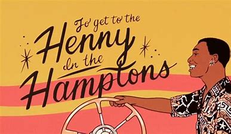

The revelry of 2019's Twenties introduced Bren Joy as a raw and indispensable singer, songwriter, lyricist, and pianist leading the new wave of R&B. On the eight-track EP, which has amassed over 5.7 million streams on Spotify, the 23-year-old fused elements of jazz, hip-hop, pop, and gospel with experimental soul music while delving into the complexities of early adulthood. From the allure of intimacy and connectivity to processing racial injustices and asserting his will to succeed, Bren offers an emotional, relatable, and groovy sojourn into his journey of self-discovery and maturation.
But harnessing the grit needed to sing uninhibited lyrics didn't always come swiftly for the Nashville native. It wasn't until he started covering songs like The 1975's "If I Believe You," on which they questioned their faith, in high school that he began to find his voice. "Figuring sexuality out, my religion, my friends, what I want to do in life, those are all things that I didn't talk about," says Bren. "But covering a song like this wasn't jarring. It was a coping mechanism; my way of getting it out." It was around this time that Bren asked himself what he wanted to do with his life. "I knew I'd find myself being creative," he says, adding that when he started singing, he knew he'd found his calling. "It felt like I'd been struck by lightning," he remembers.
While attending Belmont University studying music, Bren started dissecting the sound of gospel and R&B, the intricacies of which inspired him to begin creating his songs. "I'm big on musicality," he says. "I love crazy piano parts and unique chord structures and progressions." These have all made their way into his sound. Not only influenced by artists like Freddie Jackson, John Legend, and Kirk Franklin, who he listened to growing up, Bren also developed a love for alternative music while in college.
Experimenting with the genre "allowed me to incorporate R&B differently and reimagine it," says Bren. "That's what Twenties is all about. It's youthful, euphoric, and reimagines the mainstream. I want to be that guy whose music doesn't cater to one specific group." It's a goal he's already conquering. In October, Bren opened for rapper Megan Thee Stallion, and he rang in the new year performing ahead of Keith Urban at the "Jack Daniel's Music City Midnight" show.
Each song on Twenties should be experienced live. The EP's title track, inspired by Bren's need to find ways to "fall in love with being black and being an oddball," is a jazzy bop that follows the clap-worthy aspirational single "Henny in the Hamptons," which landed in Vulture's 2019 Best New Music list and was deemed "the song you play so often on repeat, you begin to embody Joy's silky, sweet, positive energy." Even the affecting "When Martin Died," a snippet from an interview Bren did with his grandmother about the day Martin Luther King Jr. was killed would inevitably flourish center stage.
